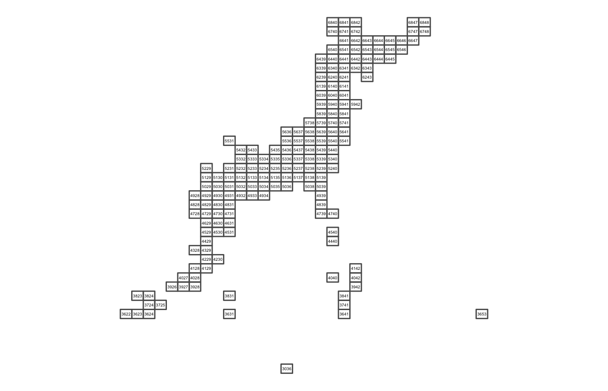

df_polys <- meshcode_set(mesh_size = 80) %>% jpmesh::export_meshes()
df_polys %>% st_geometry() %>% plot()
library(ggplot2) ggplot() + geom_sf(data = df_polys, fill = NA) + geom_text( data = cbind( mesh = df_polys$meshcode, df_polys$geometry %>% st_centroid() %>% st_coordinates() %>% as.data.frame() ), aes(X, Y, label = mesh), size = 1.2 ) + coord_sf(datum = NA) + theme_void()

library(leaflet) leaflet() %>% addTiles() %>% addPolygons(data = df_polys)
wip…
sessionInfo() #> R version 4.0.0 (2020-04-24) #> Platform: x86_64-apple-darwin17.0 (64-bit) #> Running under: macOS Catalina 10.15.4 #> #> Matrix products: default #> BLAS: /Library/Frameworks/R.framework/Versions/4.0/Resources/lib/libRblas.dylib #> LAPACK: /Library/Frameworks/R.framework/Versions/4.0/Resources/lib/libRlapack.dylib #> #> locale: #> [1] en_US.UTF-8/en_US.UTF-8/en_US.UTF-8/C/en_US.UTF-8/en_US.UTF-8 #> #> attached base packages: #> [1] stats graphics grDevices utils datasets methods base #> #> other attached packages: #> [1] ggplot2_3.3.1 sf_0.9-3 jpmesh_1.2.1.9000 #> #> loaded via a namespace (and not attached): #> [1] xfun_0.14 purrr_0.3.4 colorspace_1.4-1 vctrs_0.3.0 #> [5] miniUI_0.1.1.1 htmltools_0.4.0 yaml_2.2.1 rlang_0.4.6 #> [9] e1071_1.7-3 pkgdown_1.5.1.9000 later_1.0.0 pillar_1.4.4 #> [13] glue_1.4.1 withr_2.2.0 DBI_1.1.0 lifecycle_0.2.0 #> [17] stringr_1.4.0 munsell_0.5.0 gtable_0.3.0 htmlwidgets_1.5.1 #> [21] memoise_1.1.0 evaluate_0.14 knitr_1.28 fastmap_1.0.1 #> [25] httpuv_1.5.3.1 crosstalk_1.1.0.1 class_7.3-16 Rcpp_1.0.4.11 #> [29] KernSmooth_2.23-16 xtable_1.8-4 promises_1.1.0 backports_1.1.7 #> [33] scales_1.1.1 classInt_0.4-3 desc_1.2.0 leaflet_2.0.3 #> [37] farver_2.0.3 mime_0.9 fs_1.4.1 digest_0.6.25 #> [41] stringi_1.4.6 shiny_1.4.0.2 grid_4.0.0 rprojroot_1.3-2 #> [45] tools_4.0.0 magrittr_1.5 tibble_3.0.1 crayon_1.3.4 #> [49] pkgconfig_2.0.3 MASS_7.3-51.5 ellipsis_0.3.1 assertthat_0.2.1 #> [53] rmarkdown_2.2 R6_2.4.1 units_0.6-6 compiler_4.0.0